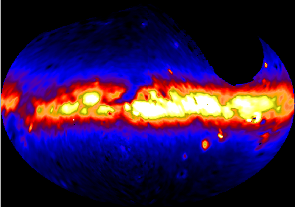

Pioneer 10/11 IPP Data
The Pioneer 10/11 spacecraft included an instrument called the Imaging Photopolarimeter (IPP). This instrument produced blue and red maps of the full sky as the Pioneer spacecraft cruised through and beyond the zodiacal dust cloud. The data taken outside the zodiacal dust cloud was used as part of my PhD thesis to determine the efficiency of the dust photoluminescence feature called Extended Red Emission (ERE). More details on my thesis and a short description of the Pioneer IPP instrument (and references) can be found in Gordon et al. 1998, ApJ, 498, 522.
As part of the work for my PhD thesis, I created full sky images from the Pioneer 10/11 IPP data. This was the first time images were created from the IPP data. Previously, IPP analyzes used the raw measurements or contour plots. One benefit of creating images from the data is the ability to combine multiple maps (11 - all taken outside the zodiacal dust cloud) to improve the S/N and (through a MCM algorithm) improve the resolution. The data for the 1st iteration (straight coadd) and 10th iteration of the MCM algorithm (improve resolution, but more structure noise as well). Most people will want to use the 1st iteration (straight coadd). The full Pioneer 10/11 IPP datasets (including the data taken inside the zodiacal dust cloud) is available, send me a request.
The units of the images are S10(G2V). See Gordon et al. 1998, ApJ, 498, 522 for the transformations to more common units.
| Pioneer B Band (λ = 4370 Å, Δλ = 826 Å) | Pioneer R Band (λ = 6441 Å, Δλ = 968 Å) |
|  |  |
| 1st iteration FITS file | 1st iteration FITS file |
| 10th iteration FITS file | 10th iteration FITS file |
Pioneer 10/11 Data
Various forms of the IPP data are given:- Data as received from NSSDC: ASCII format, but detailed knowledge of the different fields needed to decode.
- Reformated data w/ all stars: ASCII format, extracted data with README file for decoding. Does not include all the data as received from NSSDC, but what is needed to make maps.